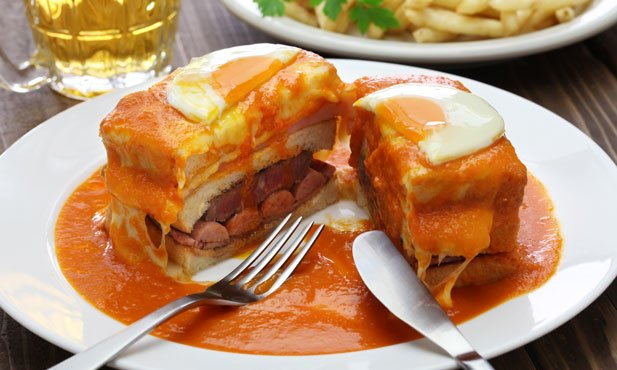

O porque de a francesinha é a melhor comida portuguesa?? Porque é simplesmente fantástica Quem discordar está a mentir.  Imagem 1. Uma obra de Arte! Se quiseres saber a recita da melhor francesinha cadastra-te no nosso site